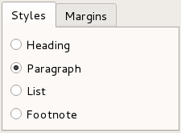
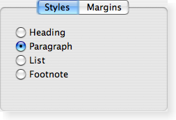
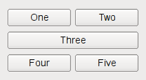
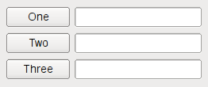

Qt Widgets
The Qt Widgets Module provides a set of UI elements to create classic desktop-style user interfaces. See the User Interfaces overview for more information on using widgets.
Getting Started
To include the definitions of the module's classes, use the following directive:
#include <QtWidgets>
To link against the module, add this line to your qmake .pro file:
QT += widgets
Widgets
Widgets are the primary elements for creating user interfaces in Qt. Widgets can display data and status information, receive user input, and provide a container for other widgets that should be grouped together. A widget that is not embedded in a parent widget is called a window.

The QWidget class provides the basic capability to render to the screen, and to handle user input events. All UI elements that Qt provides are either subclasses of QWidget, or are used in connection with a QWidget subclass. Creating custom widgets is done by subclassing QWidget or a suitable subclass and reimplementing the virtual event handlers.
Styles
Styles draw on behalf of widgets and encapsulate the look and feel of a GUI. Qt's built-in widgets use the QStyle class to perform nearly all of their drawing, ensuring that they look exactly like the equivalent native widgets.
|  |  |

Qt Style Sheets are a powerful mechanism that allows you to customize the appearance of widgets, in addition to what is already possible by subclassing QStyle.
Layouts
Layouts are an elegant and flexible way to automatically arrange child widgets within their container. Each widget reports its size requirements to the layout through the sizeHint and sizePolicy properties, and the layout distributes the available space accordingly.
 |  |
Qt Designer is a powerful tool for interactively creating and arranging widgets in layouts.
Model/View Classes
The model/view architecture provides classes that manage the way data is presented to the user. Data-driven applications which use lists and tables are structured to separate the data and view using models, views, and delegates.

Graphics View
The Graphics View Framework is for managing and interacting with a large number of custom-made 2D graphical items, and a view widget for visualizing the items, with support for zooming and rotation.

Related Information
Tutorials
Examples
API Reference
These are links to the API reference materials.